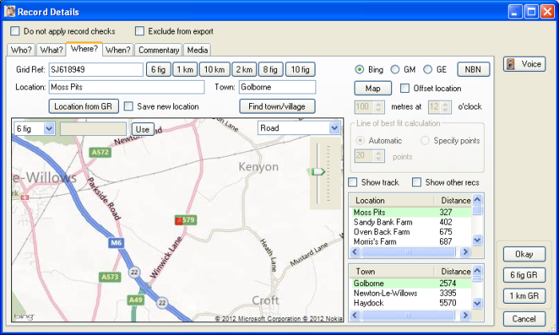
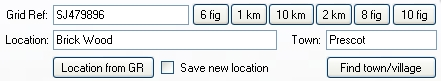
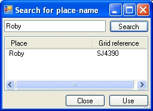
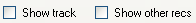
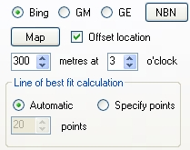
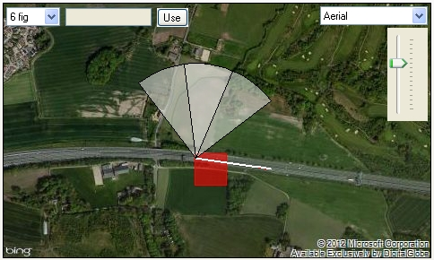

Gilbert 21 - record properties Where tab
The Where tab of the record properties form is where the details of the record location are specified.

The Grid Ref text box is where the grid reference for the record is displayed/specified. If necessary, the grid reference can be edited or specified directly in this text box.
The six buttons to the right of the Grid Ref text box are convenience buttons for resetting the grid reference at a specified precision. These buttons calculate the grid reference, at the specified precision, based on the original latitude and longitude of a point originally recorded using a GPS - e.g. those imported from a Visiontac/Columbus file. So these buttons cannot be used to change, for example, a user-specified six figure grid reference to a four figure grid reference.

The Location and Town text boxes will accept any value which you type into them - you are not limited to values stored in the Gilbert 21 place-name gazetteer. However, Gilbert 21can suggest values for these fields based on the specified grid reference. If you specify/change the grid reference and would like Gilbert 21 to suggest corresponding values for Location and Town text boxes, just click the Location from GR button. The closest location and town names are entered into these text boxes by default. You can see all the closest locations and towns in the gazetteer - and their distances from the specified grid reference - in the two list boxes at the bottom right of the form. You can quickly change the value of the Location and Town text boxes by selecting any of the values from these two text boxes.
If you specify a location name of your own in the Location text box and would like to enter this new name into Gilbert 21's gazetteer and associate it with the specified grid reference (so it can be used automatically by Gilbert 21 in the future), check the Save new location box before okaying the record details form.
If you are trying to find a grid reference at a particular location, it can help to use the Find town/village button to invoke the dialog shown here. You can type the name of a town or village and click the Search button. Places (from the OS 1:50,000 gazetteer) which match your search string will be shown in the list box together with the corresponding grid reference.
You can select a place/grid reference from this list and use it for the record by clicking the Use button. These grid references are low resolution, but idea is that you simply use this to display a map centred on roughly the right location, then pan and zoom the map to find the precise location you want and then reset the precise grid reference by clicking on the map (see below).
You can display a map centred on the specified grid reference by clicking the Map button. The kind of map generated depends upon which map provider option you have specified. The default - Bing - displays a Bing map and GM displays a Google Map on the Where tab. The third mapping option - GE - can be used to display the selected location using Google Earth - but this starts as an external application and does not display a map on the Where tab.
When a Bing or Google Map is displayed on the Where tab, you can use the drop-down list displayed in the top-right corner of the map to change the type of mapping. The options for Bing maps are:
The options for Google Maps are:
The map can be zoomed in/out by using the slider which is located under map type drop-down list. You can pan the map by dragging the map with the mouse.

If Gilbert 21 can associate the selected record with a track, you can choose to display that track on the map by checking the Show track checkbox. You can also choose to display the grid references associated with all the currently displayed records on the main Gilbert 21 form by checking the Show other recs checkbox.
By clicking the mouse anywhere on the map, you can see the grid reference at that point. A square corresponding to the grid reference where you clicked is plotted on the map. The precision of the grid reference is set before you click on the map by selecting from the drop-down list that appears over the top-left corner of the map. To use a grid-reference obtained by clicking on the map as the actual grid reference for the record, click the Use button.
You can also overlay an NBN Gateway species distribution map on any Bing or Google Map. To do this click the NBN button and complete the NBN mapping dialog.

The Offset location checkbox, and the associated controls which appear below it, can only be used for records which have been entered using a tracking GPS - i.e. Visiontac/Columbus. This set of controls allows you to specify a distance offset at an angle to your direction of travel when the record was made. For example you might make a record by recording "Buzzard 300 metres at 3 o'clock" whilst travelling in a car. By checking the Offset location box and then entering the distance offset and angle, you can get Gilbert 21 to plot this offset on the map (when you click the Map button). Then you can obtain the appropriate grid reference by clicking the map at the appropriate location and then clicking the Use button.

Gilbert 21 calculates the offset direction by fitting a straight 'line of best fit' to the track leading up to the point at which the record was made. By default a minimum of three track points and track distance of 20 m is used to generate this line of best fit. This is normally appropriate - especially if you were moving in a roughly straight line at the time the record was made. However, sometimes it is evident from the map that the default line of best fit does not represent the direction you were travelling in at the time the record was made. This could happen, for example, if you changed direction just before the record was made. In these circumstances, you can override the default by selecting the Specify points option and directly indicating the number of track points that should be used to calculate the line of best fit. You will need to use trial and error to specify an appropriate number of points in these circumstances.
Created with the Personal Edition of HelpNDoc: Full-featured Documentation generator